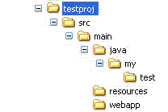

<h1>Directory structure</h1> EasyAnt cames with a lot of convention, most of them are inspired by maven conventions. Those conventions can be configured through properties such as : <ul> <li>src.main.java</li> <li>src.main.resources</li> <li>src.test.java</li> <li>src.test.resources</li> <li>src.main.webapp</li> <li>src.documentation.dir</li> </ul> In this document will try to explain you the directory structure of standard EasyAnt project. <h2>Standard directory structure</h2> Standard directory structure looks like this :  <h3>Separating project main code and test code</h3> In a ideal world application may have some tests (functionnal / unit test / integration test, etc...). This tests doesn't make sense at all to be shipped during the packaging phase of your application. To avoid this, by default EasyAnt makes a separation between <ul> <li>project code</li> <li>test code</li> </ul> By convention, project code is stored in <i>src/main</i> directory</i>, whereas your test code is in <i>src/test</i> directory. <h3>Separating source code and resources</h3> To clarify the directory structure source files and resources are separated in two directory. The directory structure of project source code looks like : <ul> <li><i>src/main/java</i> for main source code (note that this can be configured through the property <i>src.main.java</i>)</li> <li><i>src/main/resources</i> for resource files (note that this can be configured through the property <i>src.main.resources</i>)</li> </ul> The directory structure of test source code: <ul> <li><i>src/test/java</i> for test source code (note that this can be configured through the property <i>src.test.java</i>)</li> <li><i>src/test/resources</i> for test resource files (note that this can be configured through the property <i>src.test.resources</i>)</li> </ul> <div id="note"> Note: this also apply with non-java project (like groovy / scala project). <h4>Groovy project</h4> <ul> <li><i>src/main/groovy</i> for main source code (note that this can be configured through the property <i>src.main.groovy</i>)</li> <li><i>src/test/groovy</i> for test source code (note that this can be configured through the property <i>src.test.groovy</i>)</li> </ul> <h4>Scala project</h4> <ul> <li><i>src/main/scala</i> for main source code (note that this can be configured through the property <i>src.main.scala</i>)</li> <li><i>src/test/scala</i> for test source code (note that this can be configured through the property <i>src.test.scala</i>)</li> </ul> </div> <h2>WebApp ressources</h2> By convention, WebApp ressources are stored in <i>src/main/webapp</i>. This can be adapted through the property <i>src.main.webapp</i> <h2>Documentation files</h2> By convention, documentation files are stored in <i>src/documentation</i>. You can configure it through the property named <i>src.documentation.dir</i>.